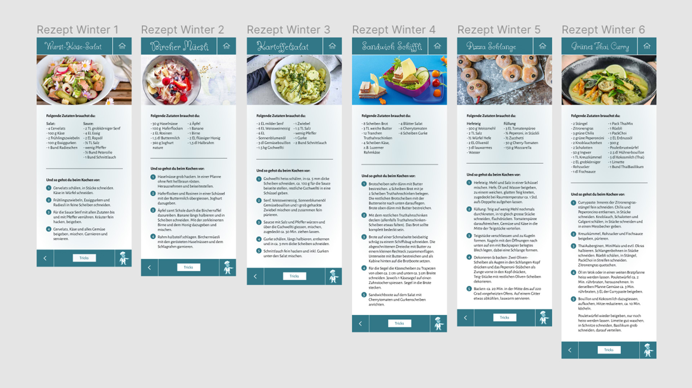
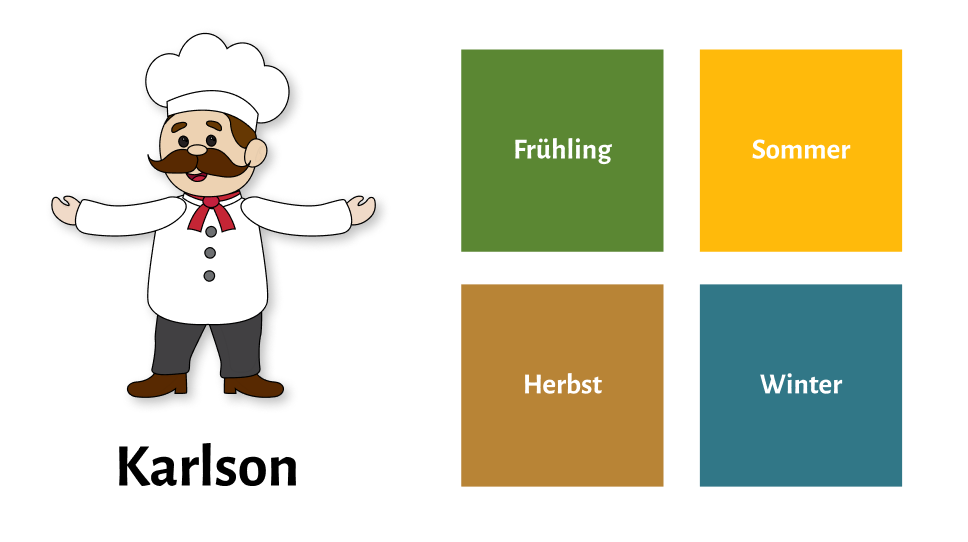
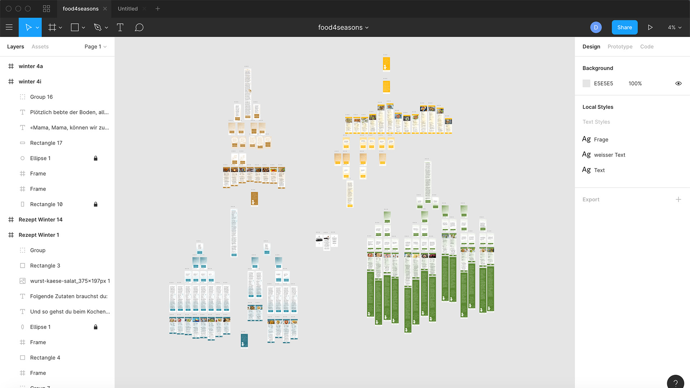
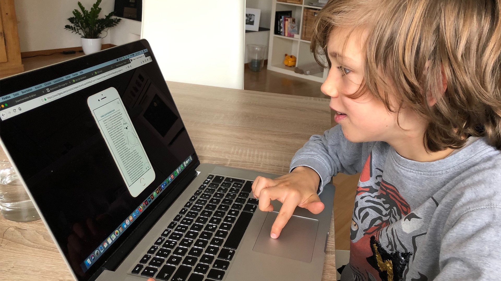

Umsetzung
Verästelung
Im Bezug auf die Verästelung haben wir ein paar Eckpunkte definiert, den Rest haben wir frei gelassen.
- Die Verästelung hat eine ja/nein Struktur
- Zwischen den einzelnen Verästelungen können einzelne Sätze als Überleitung zur nächsten Frage integriert werden
- 3–4 Stufen bis zum Rezept
- 2 Rezeptvorschläge am Schluss jedes End-Astes
- Saisonale Rezepte
Da nun jeder individuell eine Verästelung erarbeitete, sehen diese trotz definierter Eckpunkte relativ unterschiedlich aus. Hier der Vergleich von meiner Verästelung (Winter) und derjenigen von Selina (Herbst):
Geschichte
Es wurde folgendes festgelegt:
- Zu jeder Jahreszeit gibt es eine individuelle Geschichte
- Das Ziel jeder Geschichte ist es, am Schluss einen Rezeptvorschlag zu generieren
- Am Schluss der Verästelung wird noch ein kurzer abschliessender Text ergänzt
Zu jeder Verästelung, welche das Grundgerüst des Ganzen darstellt, braucht es natürlich auch noch eine passende Geschichte dazu. Eine Jahreszeit pro Geschichte hatten wir definiert. Cheyenne setzte den Frühling um, Flavia den Sommer, Selina den Herbst und ich den Winter. Ich habe versucht, das Gelernte aus dem Dramaturgieunterricht in die Geschichte infliessen zu lassen,
damit ein gewisser Spannungsbogen entsteht und man wissen möchte, wie die Geschichte schlussendlich ausgeht. Also, dass man einen Grund hat, die Geschichte zu Ende zu lesen.
Treffen in den Ferien
Um unsere erarbeiteten Verästelungen und Geschichten zu vergleichen, haben wir uns in den Ferien in einem Kaffee getroffen und das weitere Vorgehen besprochen. Folgende Fragen standen im Raum: Sind die Texte einheitlich aufgebaut? Haben wir alle einen ungefähr gleich langen Text? Möchten wir die Zielgruppe auf Kinder anpassen?
Nach Abwägen von Vor- und Nachteilen der Zielgruppe «Kinder», haben wir uns dafür entschieden. Erstens konnten wir uns nicht vorstellen, dass Erwachsene sich die Zeit nehmen, eine Geschichte zu lesen, bevor sie sich dem eigentlichen Kochen widmen. Zweitens erschien es uns einfacher, eine ansprechende Kindergeschichte zu schreiben. Also musste jeder nochmals dahinter und die bereits erarbeitete Geschichte auf Kinder anzupassen. Cheyenne bot sich freundlicherweise an, die verschiedenen Texte noch gegenzulesen, um die gröbsten Fehler auszumerzen.
Gestaltung
Nun ging es an die Gestaltung unseres Konstrukts. Selina hatte Vorlagen für die einzelnen Verästelungs-Seiten erstellt und ich machte eine Vorlage für die Rezeptseite. Die anderen konnten diese dann übernehmen, sodass zum Schluss die ganze App in einem einhetlichen Stil daherkommt. Den Gestaltungsvorschlag haben wir zuerst im InDesign umgesetzt und danach ins Figma übernommen.
Jede Geschichte bzw. jede Jahreszeit soll eine eigene Farbe bekommen. Der Frühling wird grün, der Sommer gelb, der Herbst braun und der Winter blau. Die Gestaltungselemente bleiben aber natürlich durchgehend gleich. Das Maskottchen Karlson führt das Kind durch die App. Pro Geschichte möchten wir eine Figur einbauen, optimalerweise die Hauptfigur der jeweiligen Geschichte. Am Schluss kommt dann aber wieder Karlson ins Spiel, dieser verabschiedet sich dann auch vom User – dem Kind.
Prototyp
Natürlich wollten wir daraus noch einen Prototyp erstellen, damit wir am Präsentationstag das Ganze auch demonstrieren konnten. Für die Umsetzung dessen wählten wir das Prototyping Programm Figma. Dies war einerseits sehr praktisch, da mehrere Leute gleichzeitig daran arbeiten können und andererseits verhalf es uns, Erfahrung damit zu sammeln, weil wir im weiteren Verlaufe des Studiums auch wieder damit arbeiten werden. Wie man sehen kann, wurde das Ganze doch relativ umfangreich.
Testing
Den Prototyp testete ich vorgängig mit unserer definierten Zielgruppe. Das heisst, ich setzte diesen meinem Göttibueb vor und liess ihn mal drin herumklicken und ausprobieren, ob unsere Logik auch für ihn bzw. für Kinder verständlich ist. Dieses Testing veranlasste uns, die Laufschrift grösser zu machen. Wir hatten nicht daran gedacht, dass es für Kinder einfacher im Handlig ist, wenn die Schrift etwas grösser läuft als bei Applikationen für Erwachsene.
